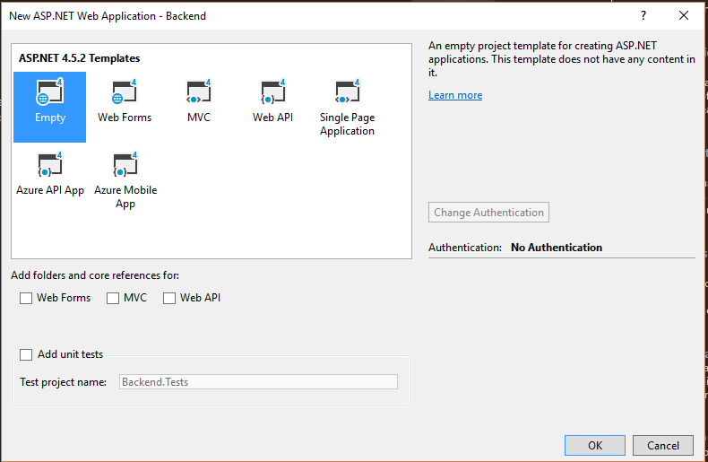
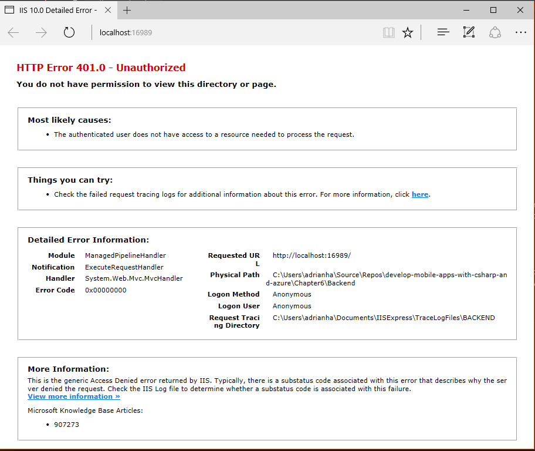

MVC Applications
At some point, you will likely want to pair your mobile application with a web interface. This may be because you have a simplified mobile app whereas you may have a more fully featured app within the web. For example, I see this design featured prominently in fitness apps. The mobile app is a news feed and recording device, whereas the web interface contains all the fitness analytics. You may also have some sort of administrative interface that provides an alternate view of the data.
Whatever the reason you decide to support web and mobile together, you will need to convert your Azure Mobile App backend to a fully-fledged ASP.NET MVC application. Fortunately, the process of merging Azure Mobile Apps with an existing ASP.NET MVC application is simple. Doing the reverse (merging MVC into Azure Mobile Apps) is considerably more complex.
Start by creating a new ASP.NET application with File -> New Project. Select the ASP.NET Web Application (.NET Framework) project template. Then select th MVC template. Change the Authentication to No Authentication.

Click OK to create the project. Run your project to ensure it is working correctly.
Why is merging MVC into Azure Mobile Apps so hard?
ASP.NET requires a large number of NuGet packages to implement MVC. These are provided for you when you start from the appropriate template, but you will need to add them yourself when you start from the Azure Mobile Apps template.
Now that you have an MVC project, let's add Azure Mobile Apps to it. Start by adding the following two NuGet packages to your project:
- Microsoft.Azure.Mobile.Server.Quickstart
- Microsoft.Owin.Host.SystemWeb
The Microsoft.Azure.Mobile.Server.Quickstart NuGet package contains dependencies for all the other Azure Mobile Apps SDK requirements. If you want the big long list instead, add the following:
- AutoMapper
- EntityFramework
- Microsoft.AspNet.WebApi.Client
- Microsoft.AspNet.WebApi.Core
- Microsoft.AspNet.WebApi.Owin
- Microsoft.Azure.Mobile.Server
- Microsoft.Azure.Mobile.Server.Authentication
- Microsoft.Azure.Mobile.Server.Notifications
- Microsoft.Azure.NotificationHubs
- Microsoft.Data.Edm
- Microsoft.Owin
- Microsoft.Owin.Security
- Microsoft.WindowsAzure.ConfigurationManager
- Owin
- System.IdentityModel.Tokens.Jwt (v4.0.x - do not install v5.x)
- System.Spatial
Custom Authentication
If you are using custom authentication, then you need to produce the entire login flow for both web and mobile sides. There is no assistance provided with the platform. You will also need to add the Microsoft.Azure.Mobile.Server.Login package to your project.
Using the Quickstart package is a serious time saver over having to type in 16 package names. The SystemWeb package enables the use of the Owin Startup.cs class. This is used to bootstrap the Azure Mobile Apps configuration.
Upgrading to .NET 4.6
If you want to run your ASP.NET service under .NET Framework 4.6, you can upgrade just about everything. However, the System.IdentityModel.Tokens.Jwt package should not be upgraded - leave it on the latest v4.x release. Do not upgrade AutoMapper beyond v3.3.1 if you are using the MappedEntityDomainManager class.
You can then copy the the following files from your original Azure Mobile Apps server project to the new project.
App_Start\Startup.MobileApp.csControllers\*.csDataObjects\*.csModels\MobileServiceContext.cs
Finally, adjust or create the Startup.cs file as follows:
using Microsoft.Owin;
using Owin;
[assembly: OwinStartup(typeof(Backend.Startup))]
namespace Backend
{
public partial class Startup
{
public void Configuration(IAppBuilder app)
{
ConfigureMobileApp(app);
}
}
}
Note the addition of the ConfigureMobileApp() call. If you are starting from the suggested template, this file does not exist and you will need to create it.
Finally, you must update the Web.config file. Firstly, in the <configSections> tag, add the following to support Entity Framework:
<section name="entityFramework" type="System.Data.Entity.Internal.ConfigFile.EntityFrameworkSection, EntityFramework, Version=6.0.0.0, Culture=neutral, PublicKeyToken=b77a5c561934e089" requirePermission="false" />
Add the following <connectionStrings> section:
<connectionStrings>
<add name="MS_TableConnectionString" connectionString="Data Source=(localdb)\MSSQLLocalDB;AttachDbFilename=|DataDirectory|\aspnet-Backend.mdf;Initial Catalog=aspnet-Backend-20160720081828;Integrated Security=True;MultipleActiveResultSets=True" providerName="System.Data.SqlClient" />
</connectionStrings>
Add the following entries to the <appSettings> section:
<appSettings>
<add key="webpages:Enabled" value="false" />
<add key="PreserveLoginUrl" value="true" />
<add key="MS_SigningKey" value="Overridden by portal settings" />
<add key="EMA_RuntimeUrl" value="Overridden by portal settings" />
<add key="MS_NotificationHubName" value="Overridden by portal settings" />
<add key="SigningKey" value="Overridden by portal settings" />
<add key="ValidAudience" value="https://chapter6.azurewebsites.net/" />
<add key="ValidIssuer" value="https://chapter6.azurewebsites.net/" />
</appSettings>
The first appSetting key should already be present. These changes can be copied from the Web.config file from your Azure Mobile Apps project.
Sharing the Database¶
Underneath the covers, Azure Mobile Apps uses EntityFramework to access the database. It requires certain adjustments to the models, as we discussed in Chapter 3. However, you can still use the same Entity Framework context to access the database. There are some caveats that must be followed, however:
- Inserts must set the fields that are not managed by the database (such as
Id). - Deletes must set the
Deletedcolumn if using Soft Delete, instead of directly deleting records.
Before you get started, you have to enable EF code-first migrations. If you don't, you will get an error about a duplicate clustered index in your application for each table based on EntityData. To enable migrations:
- Open the Package Manager Console in Visual Studio
- Run
Enable-Migrations -
Adjust the created
Migrations\Configuration.csconstructor as follows:csharp public Configuration() { AutomaticMigrationsEnabled = false; SetSqlGenerator("System.Data.SqlClient", new EntityTableSqlGenerator()); } -
In your
App_Start\Startup.MobileApp.cs, comment out or remove yourDatabase.SetInitializer()call, and replace with:csharp var migrator = new DbMigrator(new Migrations.Configuration()); migrator.Update();You can also remove the MobileServiceInitializer class in the same file, if you wish.
-
Run
Add-Migration initialin the Package Manager Console.
This is an abbreviated set of instructions from our work in Chapter 3.
As an example, let's create a default view for handling our TodoItem controller. In MVC, you need a Model, View and Controller class. The Model will be handled by our existing DataObjects\TodoItem.cs class. The Controller and View will be new classes. Let's take a look at the replacement HomeController.cs class first:
using System.Linq;
using System.Web.Mvc;
using Backend.Models;
namespace Backend.Controllers
{
public class HomeController : Controller
{
private MobileServiceContext context;
public HomeController()
{
context = new MobileServiceContext();
}
public ActionResult Index()
{
var list = context.TodoItems.ToList();
return View(list);
}
[HttpPost]
[ValidateAntiForgeryToken]
public async Task<ActionResult> Create([Bind(Include = "Text")]TodoItem item)
{
try
{
if (ModelState.IsValid)
{
item.Id = Guid.NewGuid().ToString("N");
context.TodoItems.Add(item);
await context.SaveChangesAsync();
}
}
catch (DataException)
{
ModelState.AddModelError("", "Unable to save changes.");
}
return RedirectToAction("Index");
}
}
}
I am using the existing MobileServiceContext as the Entity Framework context. The list of tasks is taken directly from the DbSet<> that was established for the mobile backend table controller. I also have a method for creating a new todo item within the controller. If you look for a tutorial on implementing CRUD in ASP.NET MVC, it's likely you will see code similar to this.
Info
I've removed some additional views from this backend (About and Contact) plus the links in the layout partial view. This is just to make the code cleaner. You can leave them in if you desire.
The view in Views\Home\Index.cshtml is similarly changed:
@{
ViewBag.Title = "Home Page";
}
@model IEnumerable<Backend.DataObjects.TodoItem>
<div class="row" style="margin-top: 8px;">
<div class="col-md-1"></div>
<div class="col-md-10">
@using (Html.BeginForm("Create", "Home", FormMethod.Post))
{
@Html.AntiForgeryToken()
<input type="text" name="Text" placeholder="Enter TodoItem Text..."/>
<input type="submit" value="Add Todo Item"/>
}
</div>
<div class="col-md-1"></div>
</div>
<div class="row" style="margin-top: 8px;">
<div class="col-md-1"></div>
<div class="col-md-10">
<div class="table-responsive">
<table class="table table-striped table-bordered table-hover table-condensed">
<thead>
<tr>
<th>#</th>
<th>Text</th>
<th>Complete</th>
</tr>
</thead>
<tbody>
@foreach (var item in Model)
{
<tr>
<td>@Html.DisplayFor(modelItem => item.Id)</td>
<td>@Html.DisplayFor(modelItem => item.Text)</td>
<td>@Html.DisplayFor(modelItem => item.Complete)</td>
</tr>
}
</tbody>
</table>
</div>
</div>
<div class="col-md-1"></div>
</div>
The HTML classes are from Bootstrap - a common CSS framework. The first row div encapsulates the form for adding a new todo item, and the second row div encapsulates the list. If you enter some text into the box and click the submit button, it will be added to the database.
Sharing Authentication¶
Custom Authentication
This section only pertains to using the standard authentication techniques provided with Azure App Service. It does not pertain to custom authentication. If you are using custom authentication, then you need to produce the entire login flow for both web and mobile sides. There is no assistance provided with the platform.
As one would suspect, setting up App Service Authentication, then adding an [Authorize] attribute to the HomeController is a good starting point for making our application authenticated. However, it isn't enough. If you just do this, you will got something like the following:

In order to properly capture the login flow, we have to redirect a missing authentication to the appropriate authentication endpoint. In ASP.NET, this functionality is configured within the Web.config file. Locate the <system.web> section and add the following:
<system.web>
<compilation debug="true" targetFramework="4.5.2"/>
<httpRuntime targetFramework="4.5.2"/>
<authentication mode="Forms">
<forms loginUrl="/.auth/login/aad" timeout="2880"/>
</authentication>
</system.web>
The <compilation> and <httpRuntime> values should already be present. The <authentication> section is new. Once you deploy this code to Azure App Service, you will be redirected to your authentication provider. Once the authentication process is complete, you will receive a page indicating successful authentication, with a link back to the website.
Use a private browsing window for testing
One of the major problems with using Azure AD for authentication as a developer is that the Azure Portal authentication uses the same providers. This can cause problems in your app. Always use a private browsing window and/or a different browser for testing your code.
Using Anti-Forgery Tokens¶
One of the gotchas for using ASP.NET MVC with Azure App Service Authentication is that the Anti-Forgery Token no longer works as advertised. If you try to use the anti-forgery token on POST operations (and the associated [ValidateAntiForgeryToken] within your controller), you will receive the following exception:
A claim of type 'http://schemas.xmlsoap.org/ws/2005/05/identity/claims/nameidentifier' or 'http://schemas.microsoft.com/accesscontrolservice/2010/07/claims/identityprovider' was not present on the provided ClaimsIdentity. To enable anti-forgery token support with claims-based authentication, please verify that the configured claims provider is providing both of these claims on the ClaimsIdentity instances it generates. If the configured claims provider instead uses a different claim type as a unique identifier, it can be configured by setting the static property AntiForgeryConfig.UniqueClaimTypeIdentifier.
Unfortunately, the logic here is wrong. Check the source code and you will see that both listed claims must be present to not throw the exception. The Azure App Service Authentication claims do not include the identityprovider claim. With the advent of .NET Core, I do not expect this bug to be fixed. The workaround is to explicitly specify the identifier to use somewhere in your application startup:
AntiForgeryConfig.UniqueClaimTypeIdentifier = ClaimTypes.NameIdentifier;
I place this in the MVC specific App_Start\RouteConfig.cs file:
namespace Backend
{
public class RouteConfig
{
public static void RegisterRoutes(RouteCollection routes)
{
routes.IgnoreRoute("{resource}.axd/{*pathInfo}");
routes.MapRoute(
name: "Default",
url: "{controller}/{action}/{id}",
defaults: new { controller = "Home", action = "Index", id = UrlParameter.Optional }
);
AntiForgeryConfig.UniqueClaimTypeIdentifier = ClaimTypes.NameIdentifier;
}
}
}
This will force the use of the (singular) claim rather than requiring both claims to be present, thus allowing you to use the anti-forgery token.